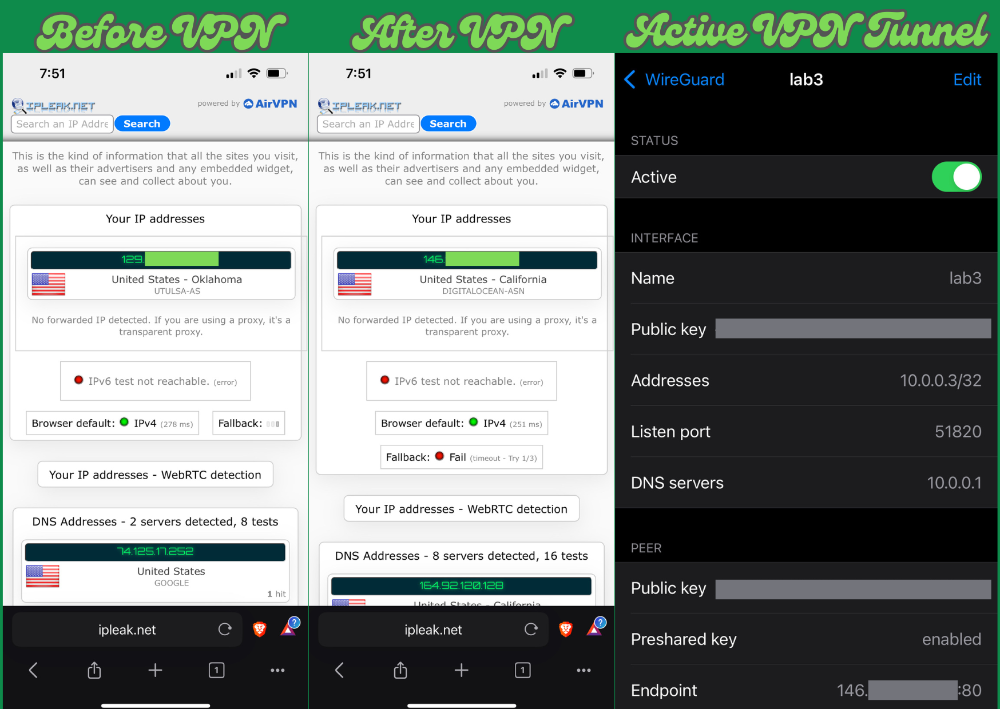
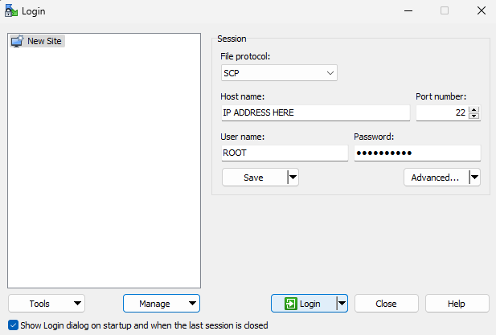
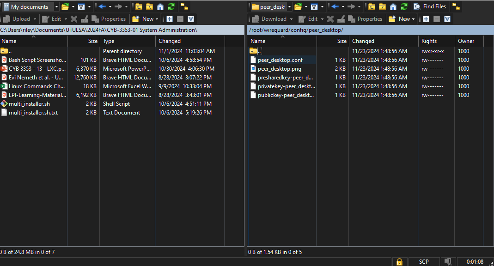
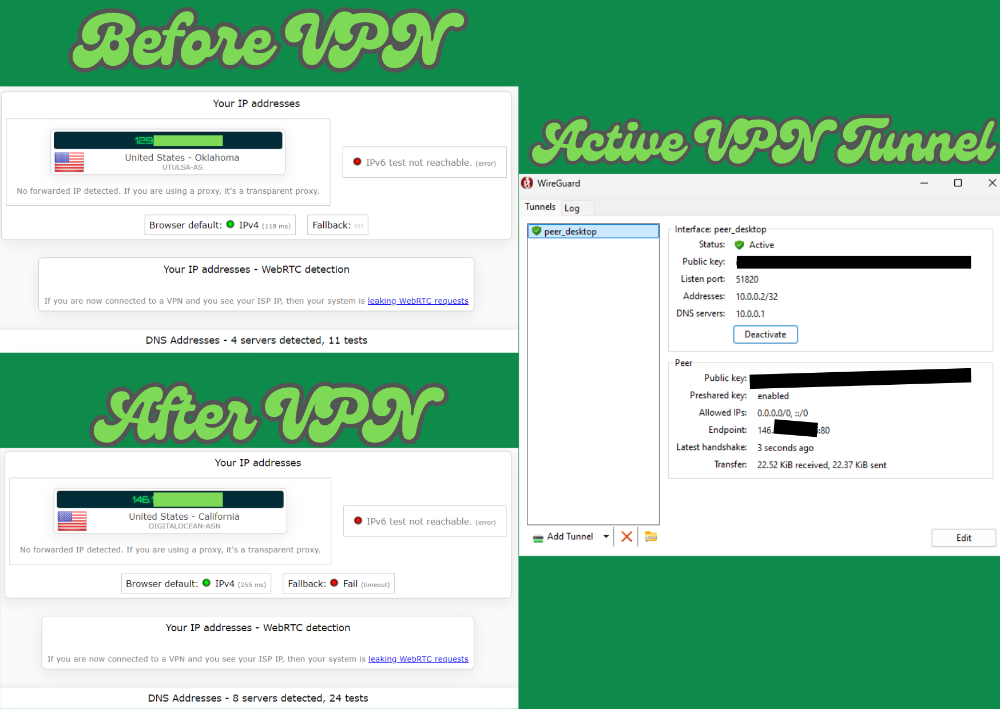

This guide will walk you through setting up a Wireguard VPN server on a Digital Ocean Droplet with a Windows laptop and an iPhone.
These Instructions are based off of https://docs.docker.com/engine/install/ubuntu/
# Add Docker's official GPG key:
sudo apt-get update
sudo apt-get install ca-certificates curl
sudo install -m 0755 -d /etc/apt/keyrings
sudo curl -fsSL https://download.docker.com/linux/ubuntu/gpg -o /etc/apt/keyrings/docker.asc
sudo chmod a+r /etc/apt/keyrings/docker.asc
# Add the repository to Apt sources:
echo \
"deb [arch=$(dpkg --print-architecture) signed-by=/etc/apt/keyrings/docker.asc] https://download.docker.com/linux/ubuntu \
$(. /etc/os-release && echo "$VERSION_CODENAME") stable" | \
sudo tee /etc/apt/sources.list.d/docker.list > /dev/null
sudo apt-get update
sudo apt-get install docker-ce docker-ce-cli containerd.io docker-buildx-plugin docker-compose-plugin
sudo docker run hello-world
sudo usermod -aG docker username
sudo docker run hello-world
sudo docker compose version
These Instructions are based off of https://thematrix.dev/setup-wireguard-vpn-server-with-docker/
Run these on your server:
mkdir -p ~/wireguard/
mkdir -p ~/wireguard/config/
nano ~/wireguard/docker-compose.yml
Copy and paste the content below:
#version: '3.8'
services:
wireguard:
container_name: wireguard
image: linuxserver/wireguard
environment:
- PUID=1000
- PGID=1000
- TZ=America/Chicago # Change this to your timezone
- SERVERURL=1.2.3.4 # Change this to your server's IP address, note: this is located on your dashboard under ipv4
- SERVERPORT=51820
- PEERS=desktop,phone # Change these to the names you want to give your peers
- PEERDNS=auto
- INTERNAL_SUBNET=10.0.0.0
ports:
- 80:51820/udp # This was changed from 51820:51820/udp to avoid common blocks on residential internet connections.
volumes:
- ./config:/config
- /lib/modules:/lib/modules
restart: always
cap_add:
- NET_ADMIN
- SYS_MODULE
sysctls:
- net.ipv4.conf.all.src_valid_mark=1
cd ~/wireguard/
docker compose up -d
docker compose logs -f wireguard
You will see the execution log, and QR codes of WireGuard VPN connection settings.
Open WireGuard VPN application on your phone, click +, Create from QR code
Since we changed the port to 80 instead of 51820, click on the vpn you just made, then click edit in the top right corner, then change the endpoint to the "your_ip:80"
To test that it is working check your localIP info in your WireGuard settings and visit IPLeak.net and compare them.

Utilize WinSCP to copy over 'peer_desktop.conf'
Firstly, Set up your connection like so:

Then drag and drop 'peer_desktop.conf' from your droplet server to wherever you want to on your desktop.

Next, download WireGuard for Windows: https://www.wireguard.com/install/
Then, set up your VPN by clicking 'Add Tunnel' at the bottom left, navigating to 'peer_desktop.conf', then click 'Open'. If you forgot to change your Endpoint port, you can edit it in WireGuard by clicking 'Edit' at the bottom right and changing 'Endpoint = your_ip.195:51820' to 'Endpoint = your_ip.195:80'
To test that it is working check your localIP info in your WireGuard settings and visit IPLeak.net and compare them.
